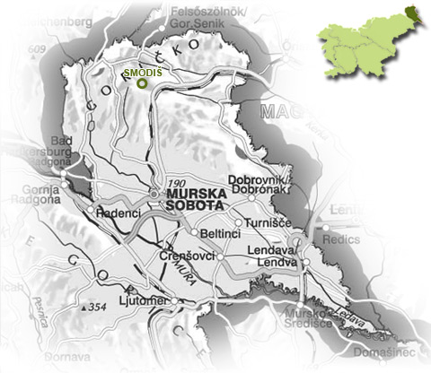

O kmetiji
Dobrodošli na kmetiji Smodiš
Smo 4 članska družina specializirana za sadjarstvo in vinogradništvo, obdelujemo okrog 12 ha zemlje, na katerih je večinoma zasajeno sadno drevje največ je jablan, breskev, sliv in vinske trte. Ob domačiji pa rastejo še druge tudi že pozabljene sadne vrste.
S turizmom in gostinstvom smo se začeli spoznavat že leta 1999, v letu 2010 smo se odločili za spremembe in razširitev gostinsko turistične ponudbe in prehod v trajnostni (ekološki) način pridelave sadja.
Ob prihodu k nam vas na dvorišču kmetije pozdravita prijazniva kosmatinca Rino in Rina, z druge strani kmetije pa mogoče tudi osla Naci in Miško z ovčjo družbo.
Naša kmetija ne ponuja le gostoljubja, temveč tudi raznolikost naše kmetije, ki vas popelje v svet narave, polnega različnih živali in pristnih, pozabljenih vrst sadja.


Kje smo?
Nahajamo se v vasi Otovci, 200 m izven vasi Mačkovci, ob smerokazu za vas Otovci. V vasi Mačkovci je tudi železniška postaja — po dogovoru vam ponudimo tudi prevoz do naše kmetije.
